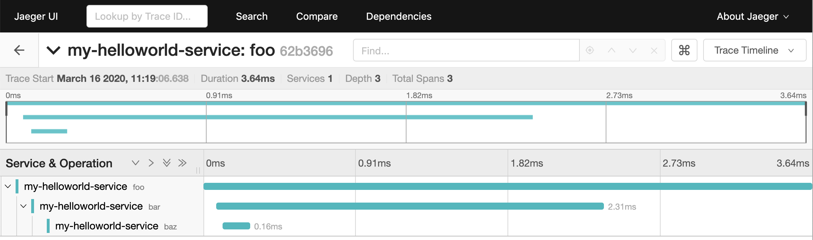

Getting Started with OpenTelemetry Python¶
This guide walks you through instrumenting a Python application with opentelemetry-python.
For more elaborate examples, see examples.
Hello world: emit a trace to your console¶
To get started, install both the opentelemetry API and SDK:
pip install opentelemetry-api
pip install opentelemetry-sdk
The API package provides the interfaces required by the application owner, as well as some helper logic to load implementations.
The SDK provides an implementation of those interfaces. The implementation is designed to be generic and extensible enough that in many situations, the SDK is sufficient.
Once installed, you can use the packages to emit spans from your application. A span represents an action within your application that you want to instrument, such as an HTTP request or a database call. Once instrumented, you can extract helpful information such as how long the action took. You can also add arbitrary attributes to the span that provide more insight for debugging.
The following example script emits a trace containing three named spans: “foo”, “bar”, and “baz”:
# tracing.py
from opentelemetry import trace
from opentelemetry.sdk.trace import TracerProvider
from opentelemetry.sdk.trace.export import (
ConsoleSpanExporter,
SimpleExportSpanProcessor,
)
trace.set_tracer_provider(TracerProvider())
trace.get_tracer_provider().add_span_processor(
SimpleExportSpanProcessor(ConsoleSpanExporter())
)
tracer = trace.get_tracer(__name__)
with tracer.start_as_current_span("foo"):
with tracer.start_as_current_span("bar"):
with tracer.start_as_current_span("baz"):
print("Hello world from OpenTelemetry Python!")
When you run the script you can see the traces printed to your console:
$ python tracing_example.py
{
"name": "baz",
"context": {
"trace_id": "0xb51058883c02f880111c959f3aa786a2",
"span_id": "0xb2fa4c39f5f35e13",
"trace_state": "{}"
},
"kind": "SpanKind.INTERNAL",
"parent_id": "0x77e577e6a8813bf4",
"start_time": "2020-05-07T14:39:52.906272Z",
"end_time": "2020-05-07T14:39:52.906343Z",
"status": {
"status_code": "OK"
},
"attributes": {},
"events": [],
"links": []
}
{
"name": "bar",
"context": {
"trace_id": "0xb51058883c02f880111c959f3aa786a2",
"span_id": "0x77e577e6a8813bf4",
"trace_state": "{}"
},
"kind": "SpanKind.INTERNAL",
"parent_id": "0x3791d950cc5140c5",
"start_time": "2020-05-07T14:39:52.906230Z",
"end_time": "2020-05-07T14:39:52.906601Z",
"status": {
"status_code": "OK"
},
"attributes": {},
"events": [],
"links": []
}
{
"name": "foo",
"context": {
"trace_id": "0xb51058883c02f880111c959f3aa786a2",
"span_id": "0x3791d950cc5140c5",
"trace_state": "{}"
},
"kind": "SpanKind.INTERNAL",
"parent_id": null,
"start_time": "2020-05-07T14:39:52.906157Z",
"end_time": "2020-05-07T14:39:52.906743Z",
"status": {
"status_code": "OK"
},
"attributes": {},
"events": [],
"links": []
}
Each span typically represents a single operation or unit of work. Spans can be nested, and have a parent-child relationship with other spans. While a given span is active, newly-created spans inherit the active span’s trace ID, options, and other attributes of its context. A span without a parent is called the root span, and a trace is comprised of one root span and its descendants.
In this example, the OpenTelemetry Python library creates one trace containing three spans and prints it to STDOUT.
Configure exporters to emit spans elsewhere¶
The previous example does emit information about all spans, but the output is a bit hard to read. In most cases, you can instead export this data to an application performance monitoring backend to be visualized and queried. It’s also common to aggregate span and trace information from multiple services into a single database, so that actions requiring multiple services can still all be visualized together.
This concept of aggregating span and trace information is known as distributed tracing. One such distributed tracing backend is known as Jaeger. The Jaeger project provides an all-in-one Docker container with a UI, database, and consumer.
Run the following command to start Jaeger:
docker run -p 16686:16686 -p 6831:6831/udp jaegertracing/all-in-one
This command starts Jaeger locally on port 16686 and exposes the Jaeger thrift agent on port 6831. You can visit Jaeger at http://localhost:16686.
After you spin up the backend, your application needs to export traces to this system. Although opentelemetry-sdk doesn’t provide an exporter
for Jaeger, you can install it as a separate package with the following command:
pip install opentelemetry-exporter-jaeger
After you install the exporter, update your code to import the Jaeger exporter and use that instead:
# jaeger_example.py
from opentelemetry import trace
from opentelemetry.exporter import jaeger
from opentelemetry.sdk.trace import TracerProvider
from opentelemetry.sdk.trace.export import BatchExportSpanProcessor
trace.set_tracer_provider(TracerProvider())
jaeger_exporter = jaeger.JaegerSpanExporter(
service_name="my-helloworld-service",
agent_host_name="localhost",
agent_port=6831,
)
trace.get_tracer_provider().add_span_processor(
BatchExportSpanProcessor(jaeger_exporter)
)
tracer = trace.get_tracer(__name__)
with tracer.start_as_current_span("foo"):
with tracer.start_as_current_span("bar"):
with tracer.start_as_current_span("baz"):
print("Hello world from OpenTelemetry Python!")
Finally, run the Python script:
python jaeger_example.py
You can then visit the Jaeger UI, see your service under “services”, and find your traces!
Instrumentation example with Flask¶
While the example in the previous section is great, it’s very manual. The following are common actions you might want to track and include as part of your distributed tracing.
HTTP responses from web services
HTTP requests from clients
Database calls
To track these common actions, OpenTelemetry has the concept of instrumentations. Instrumentations are packages designed to interface with a specific framework or library, such as Flask and psycopg2. You can find a list of the currently curated extension packages in the Contrib repository.
Instrument a basic Flask application that uses the requests library to send HTTP requests. First, install the instrumentation packages themselves:
pip install opentelemetry-instrumentation-flask
pip install opentelemetry-instrumentation-requests
The following small Flask application sends an HTTP request and also activates each instrumentation during its initialization:
# flask_example.py
import flask
import requests
from opentelemetry import trace
from opentelemetry.instrumentation.flask import FlaskInstrumentor
from opentelemetry.instrumentation.requests import RequestsInstrumentor
from opentelemetry.sdk.trace import TracerProvider
from opentelemetry.sdk.trace.export import (
ConsoleSpanExporter,
SimpleExportSpanProcessor,
)
trace.set_tracer_provider(TracerProvider())
trace.get_tracer_provider().add_span_processor(
SimpleExportSpanProcessor(ConsoleSpanExporter())
)
app = flask.Flask(__name__)
FlaskInstrumentor().instrument_app(app)
RequestsInstrumentor().instrument()
@app.route("/")
def hello():
tracer = trace.get_tracer(__name__)
with tracer.start_as_current_span("example-request"):
requests.get("http://www.example.com")
return "hello"
app.run(debug=True, port=5000)
Now run the script, hit the root URL (http://localhost:5000/) a few times, and watch your spans be emitted!
python flask_example.py
Configure Your HTTP propagator (b3, Baggage)¶
A major feature of distributed tracing is the ability to correlate a trace across multiple services. However, those services need to propagate information about a trace from one service to the other.
To enable this propagation, OpenTelemetry has the concept of propagators, which provide a common method to encode and decode span information from a request and response, respectively.
By default, opentelemetry-python is configured to use the W3C Trace Context
HTTP headers for HTTP requests, but you can configure it to leverage different propagators. Here’s
an example using Zipkin’s b3 propagation:
from opentelemetry import propagators
from opentelemetry.sdk.trace.propagation.b3_format import B3Format
propagators.set_global_textmap(B3Format())
Add metrics¶
Spans are a great way to get detailed information about what your application is doing, but what about a more aggregated perspective? OpenTelemetry provides support for metrics. Metrics are a time series of values that express things such as CPU utilization, request count for an HTTP server, or a business metric such as transactions.
You can annotate all metrics with labels. Labels are additional qualifiers that describe what subdivision of the measurements the metric represents.
The following example emits metrics to your console, similar to the trace example:
# metrics.py
import time
from opentelemetry import metrics
from opentelemetry.sdk.metrics import MeterProvider
from opentelemetry.sdk.metrics.export import ConsoleMetricsExporter
from opentelemetry.sdk.metrics.export.controller import PushController
metrics.set_meter_provider(MeterProvider())
meter = metrics.get_meter(__name__, True)
exporter = ConsoleMetricsExporter()
controller = PushController(meter, exporter, 5)
staging_labels = {"environment": "staging"}
requests_counter = meter.create_counter(
name="requests",
description="number of requests",
unit="1",
value_type=int,
label_keys=("environment",),
)
requests_counter.add(25, staging_labels)
time.sleep(5)
requests_counter.add(20, staging_labels)
time.sleep(5)
The sleep functions cause the script to take a while, but it eventually yields the following output:
$ python metrics_example.py
ConsoleMetricsExporter(data="Counter(name="requests", description="number of requests")", labels="(('environment', 'staging'),)", value=25)
ConsoleMetricsExporter(data="Counter(name="requests", description="number of requests")", labels="(('environment', 'staging'),)", value=45)
Use metrics with Prometheus¶
It’s valuable to have a data store for metrics so you can visualize and query the data. A common solution is Prometheus, which provides a server to scrape and store time series data.
Start by bringing up a Prometheus instance to scrape your application. Write the following configuration:
# /tmp/prometheus.yml
scrape_configs:
- job_name: 'my-app'
scrape_interval: 5s
static_configs:
- targets: ['localhost:8000']
Then start a Docker container for the instance:
# --net=host will not work properly outside of Linux.
docker run --net=host -v /tmp/prometheus.yml:/etc/prometheus/prometheus.yml prom/prometheus \
--log.level=debug --config.file=/etc/prometheus/prometheus.yml
Install an exporter specific to Prometheus for your Python application:
pip install opentelemetry-exporter-prometheus
Use that exporter instead of the ConsoleMetricsExporter:
# prometheus.py
import sys
import time
from prometheus_client import start_http_server
from opentelemetry import metrics
from opentelemetry.exporter.prometheus import PrometheusMetricsExporter
from opentelemetry.sdk.metrics import MeterProvider
from opentelemetry.sdk.metrics.export import ConsoleMetricsExporter
from opentelemetry.sdk.metrics.export.controller import PushController
# Start Prometheus client
start_http_server(port=8000, addr="localhost")
processor_mode = "stateful"
metrics.set_meter_provider(MeterProvider())
meter = metrics.get_meter(__name__, processor_mode == "stateful")
exporter = PrometheusMetricsExporter("MyAppPrefix")
controller = PushController(meter, exporter, 5)
staging_labels = {"environment": "staging"}
requests_counter = meter.create_counter(
name="requests",
description="number of requests",
unit="1",
value_type=int,
label_keys=("environment",),
)
requests_counter.add(25, staging_labels)
time.sleep(5)
requests_counter.add(20, staging_labels)
time.sleep(5)
# This line is added to keep the HTTP server up long enough to scrape.
input("Press any key to exit...")
The Prometheus server runs locally on port 8000. The instrumented code makes metrics available to Prometheus via the PrometheusMetricsExporter.
Visit the Prometheus UI (http://localhost:9090) to view your metrics.
Use the OpenTelemetry Collector for traces and metrics¶
Although it’s possible to directly export your telemetry data to specific backends, you might have more complex use cases such as the following:
A single telemetry sink shared by multiple services, to reduce overhead of switching exporters.
Aggregaing metrics or traces across multiple services, running on multiple hosts.
To enable a broad range of aggregation strategies, OpenTelemetry provides the opentelemetry-collector. The Collector is a flexible application that can consume trace and metric data and export to multiple other backends, including to another instance of the Collector.
Start the Collector locally to see how the Collector works in practice. Write the following file:
# /tmp/otel-collector-config.yaml
receivers:
opencensus:
endpoint: 0.0.0.0:55678
exporters:
logging:
loglevel: debug
processors:
batch:
queued_retry:
service:
pipelines:
traces:
receivers: [opencensus]
exporters: [logging]
processors: [batch, queued_retry]
metrics:
receivers: [opencensus]
exporters: [logging]
Then start the Docker container:
docker run -p 55678:55678 \
-v /tmp/otel-collector-config.yaml:/etc/otel-collector-config.yaml \
omnition/opentelemetry-collector-contrib:latest \
--config=/etc/otel-collector-config.yaml
Install the OpenTelemetry Collector exporter:
pip install opentelemetry-exporter-otlp
Finally, execute the following script:
# otcollector.py
import time
from opentelemetry import metrics, trace
from opentelemetry.exporter.otlp.metrics_exporter import OTLPMetricsExporter
from opentelemetry.exporter.otlp.trace_exporter import OTLPSpanExporter
from opentelemetry.sdk.metrics import MeterProvider
from opentelemetry.sdk.metrics.export.controller import PushController
from opentelemetry.sdk.trace import TracerProvider
from opentelemetry.sdk.trace.export import BatchExportSpanProcessor
span_exporter = OTLPSpanExporter(
# optional
# endpoint:="myCollectorURL:55678",
# credentials=ChannelCredentials(credentials),
# headers=(("metadata", "metadata")),
)
tracer_provider = TracerProvider()
trace.set_tracer_provider(tracer_provider)
span_processor = BatchExportSpanProcessor(span_exporter)
tracer_provider.add_span_processor(span_processor)
metric_exporter = OTLPMetricsExporter(
# optional
# endpoint:="myCollectorURL:55678",
# credentials=ChannelCredentials(credentials),
# headers=(("metadata", "metadata")),
)
# Meter is responsible for creating and recording metrics
metrics.set_meter_provider(MeterProvider())
meter = metrics.get_meter(__name__)
# controller collects metrics created from meter and exports it via the
# exporter every interval
controller = PushController(meter, metric_exporter, 5)
# Configure the tracer to use the collector exporter
tracer = trace.get_tracer_provider().get_tracer(__name__)
with tracer.start_as_current_span("foo"):
print("Hello world!")
requests_counter = meter.create_counter(
name="requests",
description="number of requests",
unit="1",
value_type=int,
label_keys=("environment",),
)
# Labels are used to identify key-values that are associated with a specific
# metric that you want to record. These are useful for pre-aggregation and can
# be used to store custom dimensions pertaining to a metric
labels = {"environment": "staging"}
requests_counter.add(25, labels)
time.sleep(10) # give push_controller time to push metrics